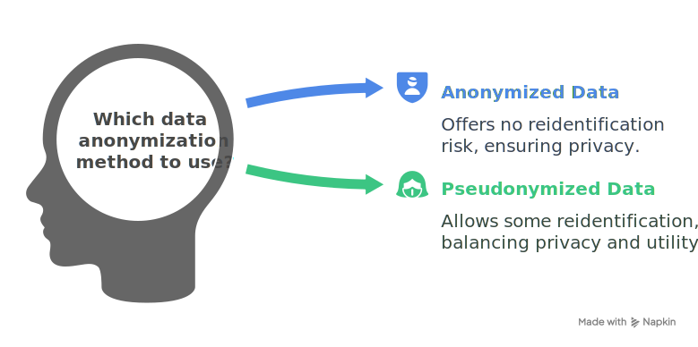

You most likely have heard the term “data anonymization” if you are involved with data directly or indirectly. In this post, we will learn about this crucial part of the data processing pipeline, targetting data privacy at its core.
But wait a minute. Let’s address this question first “why does it matter?” before delving into data anonymization.
Why does data anonymization matter?
Well, to start with, data anonymization matters to honor people’s Right to Privacy, a fundamental human right, included in the universal declaration of human rights by the United Nations (article 12).
No one shall be subjected to arbitrary interference with his privacy, family, home, or correspondence, nor to attacks upon his honor and reputation. Everyone has the right to the protection of the law against such interference or attacks.
This article, though, does not explicitly mention data privacy but it is inherent in the term privacy.
In the current digital age we are living in today, we are increasingly contributing, knowingly or unknowingly, to data collection. Some of those data are highly personal (e.g., credit card number, phone number) –also referred to as personal data– making data privacy a paramount concern.
A formal definition of Personal data is any information concerning the identified person or identifiable living person (GDPR 2016, Indian Digital Data Protection Act 2023). This is also referred to as Personal Identifiable Information (PII) (Refer to this post for more detailed information on PII). Some examples are name, email address, and passport number.
The first and foremost reason why data anonymization matters? Is because data anonymization helps to protect personal data to respect people’s privacy and, thus, upholds the fundamental Right to Privacy. However, we don’t live in an perfact world where people always do what is ethical and right (In that case we would not have needed laws at all). So to ensure the protection of personal data, data privacy regulations have been drafted and integrated in constitutions across the world (refer to this link for more information on data privacy laws in different countries). For example, GDPR in European countries, Digital Data Protection Act in India, Personal Information Protection Law in China, etc. **
The second reason why we should care for data anonymization is that it helps in adhering to data-privacy regulations and legislation violations which could not only result in monetary loss but also loss of customer trust.
Non-compliance with data-privacy legislation could cost a fortune. Take the example of 746 million euro penalty on Amazon for not processing personal data as per GDPR**). So to avoid such a situation and also to respect people’s privacy, we need a way that can strike a balance between the utility of data and privacy preservation. Here, we have data anonymization.
Data anonymization
Data anonymization removes personal information from the data without degrading the utility of that data for the objective at hand, thus, greatly reducing the risks associated with data privacy.
More importantly, data privacy regulations—such as the GDPR—do not apply to properly anonymized data, allowing organizations to operate without compliance concerns (provided the anonymization is conducted correctly).
Data anonymization techniques can be broadly categorized into two main types: anonymization and pseudonymization.
The following section explores both approaches, highlights their key differences, and illustrates their applications with real-world examples.
Anonymization v/s Pseudonymization
Data anonymization and pseudonymization are both methods of removing personal information, but they differ in two key ways:
- The level of anonymity they provide
- Whether the process can be reversed
The figure below highlights the main differences between these two approaches.” 
Example
Let’s take an example to understand it further. Consider the following table, which consists of Personal Identifiable Information (PII).
Original data
| Name | Gender | Date of Birth | Zipcode |
|---|---|---|---|
| John Smith | Male | 1985-03-15 | 90210 |
| Emily Davis | Female | 1990-07-22 | 10001 |
| Michael Lee | Male | 1978-11-05 | 30301 |
Pseudonymized data
Pseudonymization replaces direct personal identifiers (like names) with artificial keys or pseudonyms. The mapping between original identifiers and pseudonyms is preserved, enabling valuable use cases such as targeted marketing campaigns while still protecting raw personal data.
| Pseudonymized Name | Gender | Date of Birth | Zipcode |
|---|---|---|---|
| User_1A7B | Male | 1985-03-15 | 90210 |
| User_2C8D | Female | 1990-07-22 | 10001 |
| User_3E6F | Male | 1978-11-05 | 30301 |
The mapping from the original PII to the pseudonymized version is reversible which means individuals still can be re-identified.
Anonymized data
In the case of an anonymized version of data, the mapping is irreversible. For example, names are replaced with alternate strings without retaining any information on the mapping which means we don’t have any means of converting back the anonymized ID to original PII using only the information available in the table.
| Anonymized ID | Gender | Date of Birth | Zipcode |
|---|---|---|---|
| ANON_001 | Male | 1985-03-15 | 90210 |
| ANON_002 | Female | 1990-07-22 | 10001 |
| ANON_003 | Male | 1978-11-05 | 30301 |
However, this de-indentified data along with some other publicly available information could led to re-identification.
The table though anonymized personal identifier but re-identification is still possible using some additional information.
For example, Professor Lataney Sweeney (who also proposed the k-anonymity method) showed that “87% of the U.S. Population are uniquely identified by {date of birth, gender, ZIP}”. This now really makes us think again about the risks associated with our anonymized version of data.
To mitigate re-identification risks in supposedly ‘anonymized’ data, robust techniques like k-anonymity (discussed earlier) and generalization have been developed. When properly implemented, these methods enable correct anonymization—ensuring personal data cannot be traced back to individuals, as illustrated in the example below.
| Anonymized ID | Gender | Age Group | Generalized Zipcode |
|---|---|---|---|
| ANON_001 | Male | 35-44 | 90XXX |
| ANON_002 | Female | 30-34 | 10XXX |
| ANON_003 | Male | 45-54 | 30XXX |
In the upcoming posts, we’ll peel back the layers of data anonymization!
Stay tuned for more privacy-preserving insights! 🔍🔒
References
- What is Personally Identifiable Information (PII)? | IBM
- Protection of personal data and privacy
- Data protection laws - Data Protection Laws of the World
- https://ega.ee/wp-content/uploads/2022/06/eGov-Legal-Framework-GDPR-presentation-06.06.2022-KSL.pdf
- https://www.meity.gov.in/static/uploads/2024/06/2bf1f0e9f04e6fb4f8fef35e82c42aa5.pdf
- https://medium.com/mercedes-benz-techinnovation-blog/data-privacy-anonymization-and-pseudonymization-part-1-6b145459a3bf